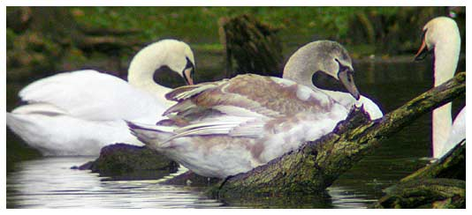

Mute Swan
An irregular visitor to Chard reservoir in the past. Breeding has taken place on a few past occasions but success rate was usually poor. Supplementary feeding from 2011 helped a pair to raise young successfully for several years.

05/06/26 - Pair with 5 juveniles
14/08/60 - Maximum count of 16 birds. Again on 18/08
04/12/66 - 8 birds
19/03/78 - 9 birds
??/07/84 - Pair present
1986 - Pair & 5 immatures, although these probably did not breed at the reservoir
1987 - Pair & nest
1988 - Pair with 6 juveniles but they did not reach maturity
30/12/97 - 3 birds. Now an unusual visitor!
14/10/98 - 1 adult
03/11/98 - 5 birds, including 2 immatures
23/11/98 - 1 Black Swan
01/12/99 - 2 adults, joined by an immature bird on 3 & 4/12
27/01/00 - Single adult
28/04/00 - 2 birds
08/05/00 - 2 birds and 5 immatures on 15/05
03/09/00 - 2 birds
01/10/00 - 3 birds, 2 on 02/10 and 1 on 29/10
2001 - A good year for Mute Swans with a max of 9 on 13/05. Also a pair stayed for 3 months from 02/06 and up to 4 present throughout November, 6 birds on 11/12 and 3 on 31/12
2002 - There were 60 sightings through the year mainly of ones or twos. A pair stayed from April for 5 months and bred, but the single cygnet only lived for about 10 days. November was a good month again with a maximum of 6
2003 - 35 sightings this year of mainly ones and twos and a maximum of 7 on 23/03
2004 - 24 sightings with maxumum 5 immature birds in March.
2005 - 26 sightings of mainly ones and twos and a maximum of 3 on 12/05.
2006 - 43 sightings of mainly ones and twos and a maximum of 3 in May and September.
2007 - 11 sightings mainly singles
2008 - 89 sightings - a good year. None in January, February or October. First bird on 18/03/08 then between 1 and 5 for most of the rest of the year
2009 - 105 sightings with up to 5 birds
2010 - 101 sightings mostly of 1 to 4 birds. 8 birds on 26/12
2011 - 181 sightings through the year with up to 6 fully grown birds. A pair nested and produced 5 chicks, but these were fairly quickly reduced to one. Some supplementary feeding helped this one to grow to full size.
2012 - A pair stayed all year and raised one young, despite the first nest being washed out at the end of April. 8 birds seen 23/05, 9 adults and one juv on 28/07
2013 - A pair successfully raised 3 young from an initial 4 cygnets. Some artificial feeding helped.
2014 - A pair raised 1 young to maturity from an initial 3 cygnets first seen on 14/05
2015 - The young bird from last year remained until June, after the now resident pair produced 7 cygnets. 5 of the 7 young birds survived to the end of the year with supplementary feeding.
2016 - A complex year for the Mutes starting with the usual pair (the male ringed as AIB) and 5 young from 2015. One of the young was put down on about 10/01 as it had septic arthritis. One of the remaining 4 juvs disappeared in March and the remaining 3 then left the reservoir in April. AIB and mate nested again and had 5 new cygnets in late May. On 06/07, the female of the pair was put down by the RSPCA as it had an untreatable sinus infection, leaving the male (AIB) to look after the youngsters. A new pair (DFX and mate with spiral rings yellow above blue) joined the resident male (AIB) on 16/11, but AIB left a few days later, leaving his young behind and was last seen on 20/11. A pair was seen intermittently with the 4 young swans to the end of the year but it was not always the same pair. One of those pairs was unringed. On 01/12 the ring of DFX was seen to confirm identity. However on 31/12, there was one adult pair present and one of them was ringed as DKL and so was not one of the recent ringed pair.
2017 - This year there were more birds than in any year since 1960. There were at least 10 birds (mostly 13) from mid April until the begining of August with a maximum of 15 in May. These included 2 identifiable pairs ringed as BXN & CDS and DKL with an unringed mate. BXN was the dominant male who arrived in March and during August chased off most of the other swans. Even his mate CDS disappeared on 12/08 then BXN himself left 5 days later. BXN reappeared in October along with his mate CDS and they stayed until 01/12. Other identifiable swans were the pair CSB & DAC who were present in February and March, DSJ on 02/09 and the immature FAX on 29/09. FAX was ringed a few weeks before at Nine Springs,Yeovil and then on 29/09 was seen at Sutton Bingham in the morning then it was at Chard Reservoir between 12:30 and 15:00 and was seen again later at 17:00 at Chard Junction. There was also a Black Swan on 05/12
2018 - Another busy year though not quite as many birds. A resident pair dominated the first half of the year with BXN now paired up with DKL. They nested and produced 6 cygnets on 29/05. The next day they weren't seen probably due to the temporary arrival of 6 new birds. The 6 cygnets survived until 24/06. On 25/06 there were only 5 seen and on 26/05 only 4. The remaining family of 6 were good until 07/06 when the whole family disappeared, the young having not yet fledged, so presumably they were taken by a predator. Apart from some unringed birds, one was seen ringed as FDS on 12/09 and on 06/11, BXN was back with an unringed bird and another ringed bird reported as DXT ( but maybe DKL? ). Those 3 probably remained until the next day (3 swans were seen), but disappeared after that. On 03/12 3 swans were again seen, but they all proved to be unringed
2019 - A simpler year dominated by the pair BXN (male) and DKL (female) who were present most of the year and nested. 4 cygnets were first seen on 17/05, but 3 of them disappeared by 24/05. The remaining cygnet survived the year. There were occasional visits by other swans, but none stayed or were identified by ring. The male BXN lost his yellow identifying ring about the same time as the nest was completed by 24/03.
2020 - The cygnet from last year stayed with the resident pair BXN and DKL until March when it disappeared, having joined in with some of the adults display previously. The pair attempted to nest, but no young were produced this year. On 08/08 there was an additional adult plus 6 well grown young birds, but they stayed only one day.
2021 - The usual pair present all year (female ringed as DKL and male that lost his BXN ring in 2019). They attempted to nest, first starting on 05/03. That was unsuccessful and they tried and failed again in May and June. There were additional one day visitors of 1 adult on 07/03 and 2 on 02/12
2022 - The usual pair defended the reservoir against several intruder swans during the year including 6 new birds on 16/09. They mated on 21/03 and were seen to have a nest by the end of March. It seems that maybe several nesting attempts were made as the nest was only finally abandoned on 16/06 with no cygnets being produced.
2023 - The local pair attempted nesting again, but the female (DKL) remained on the one nest in vain for more than 10 weeks! Nest building started 25/03 with the female finally giving up on 21/06. The pair were only occasionally present in November and the first half of December
2024 - The local pair (female ringed as DKL) were present from the start of the year through to 17/10 with a couple of one day visits by other birds. Then none were seen until 15/11 when an immature pair flew over. A pair were sometimes seen at dusk during the second half of November, but not specifically identified, then 2 immature birds were seen during December. No nest this year
2025 - The local pair were not seen until 18/01. The first swans of the year were 2 immature birds on 07/01 and again on 10/01. An adult and immature on 16/01 and a single immature on 17/01. These were mostly dusk arrivals. Once the local pair arrived on 18/01, they would likely drive other swans away. The local pair were seen all through February, March and April with the male oddly on a nest (maybe an old one) at the north end on 05/04. Through May and June sometimes only 1 bird was seen, so maybe the partner was on a nest, but equally both birds were often on the water, so it doesn't seem to have been a serious nesting attempt. 4 birds were seen on 04/05. From July to the end of the year the local pair were present daily with an additional 5 arrivals on 11/10 and 1 additional adult on 04/11 and 06/11.